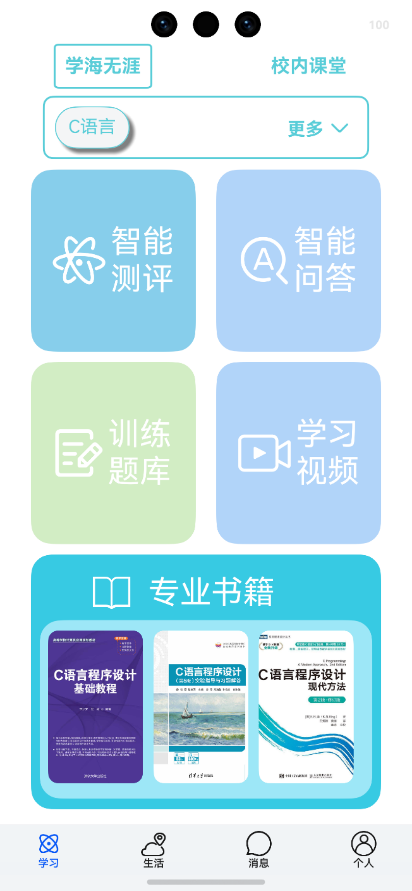
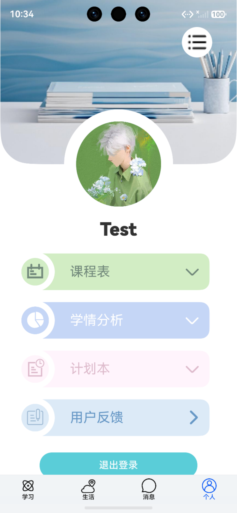
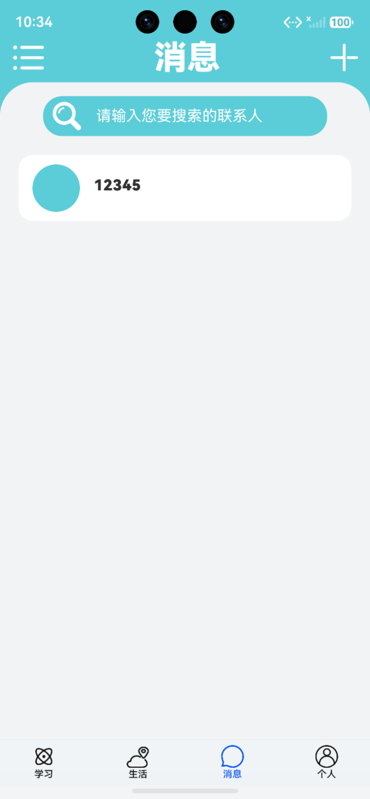
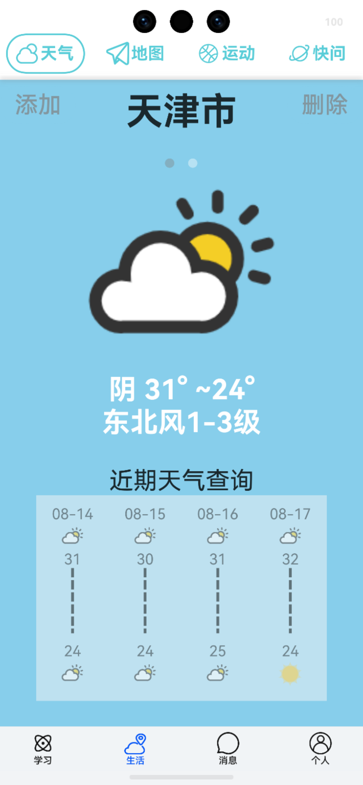

智学领航
Software · AI Learning移动端应用 · 2025学习 + 校园生活一体化
面向学生的 智能学习助手：一头接住"学"——智能测评、智能问答、训练题库、学习视频；一头接住"在校的日常"——课程表、学情分析、计划本、师生消息、天气地图运动。把学习与校园生活放进同一个应用，学生不用在四五个 App 之间来回切换。
01
产品概览
Product Overview

学习 · 测评 / 问答 / 题库

个人中心 · 课程表 / 学情分析

消息 · 师生沟通

生活 · 天气 / 地图 / 运动
02
要解决的问题
Problem & Insight
学生的学习工具通常是割裂的：刷题在一个 App，看课在另一个平台，课程表躺在相册截图里，学情要靠老师期末反馈才知道。结果是练了什么、错在哪、下一步该干什么三件事互相脱节，努力无法沉淀成可追踪的进步。
智学领航把这条链路收拢到一处：测评定位薄弱点 → 题库针对性训练 → 视频补足理解 → 学情分析回看效果 → 计划本安排下一步，再叠加课程表与师生消息，让"学到哪、差在哪、问谁"都有明确入口。
03
核心功能
Key Features
智能测评通过测评快速定位知识薄弱点，为后续训练与推荐提供依据
智能问答学习中遇到疑问直接提问，即时获得解答，问题不过夜
训练题库按薄弱点组织训练内容，练完即反馈，避免盲目刷题
学习视频配套讲解视频，用于概念补强与难点回看
课程表个人中心内置课程表，在校安排一屏可见，与学习计划对齐
学情分析把练习与测评数据汇总成可理解的学情结论，进步与短板一目了然
计划本把"下一步该做什么"落成具体计划，学习安排可执行、可追踪
师生消息内置沟通通道，疑问可直接找到老师，减少沟通成本
校园生活天气、地图与运动等日常服务，覆盖在校生活的高频需求
04
设计与实现要点
Design & Implementation
产品形态移动端应用以学生学习路径为主线组织信息架构，学习入口置顶
学习闭环测评 → 训练 → 视频 → 学情四段式闭环，让每一次练习都沉淀为可视化的进步
数据呈现学情可视化将练习与测评结果转化为直观图表，降低理解成本
校园整合课程表 / 计划本 / 消息学习安排与在校日常统一管理，减少 App 切换
界面风格轻量化 + 高信息密度卡片化布局，移动端单手可达，关键信息优先展示
05
落地成果
Results
4大模块：学习 / 个人中心 / 消息 / 生活
9项核心能力贯通学与在校日常
1条闭环链路：测评 → 训练 → 补强 → 学情 → 计划
1个入口替代多个 App 的来回切换
完整产品方案从场景梳理、信息架构到高保真界面与交互流程，交付可演示的完整产品方案
学习链路打通测评结果直接驱动训练与补强内容，避免"练了但不知道有没有用"
学情可追踪学情分析把过程数据变成结论，学生与家长都能看懂进步曲线
校园生活整合课程表、计划本与师生消息打通，学习安排与日常节奏不再割裂